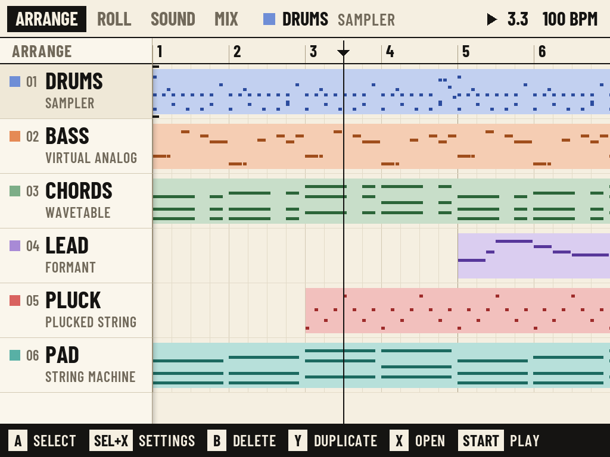
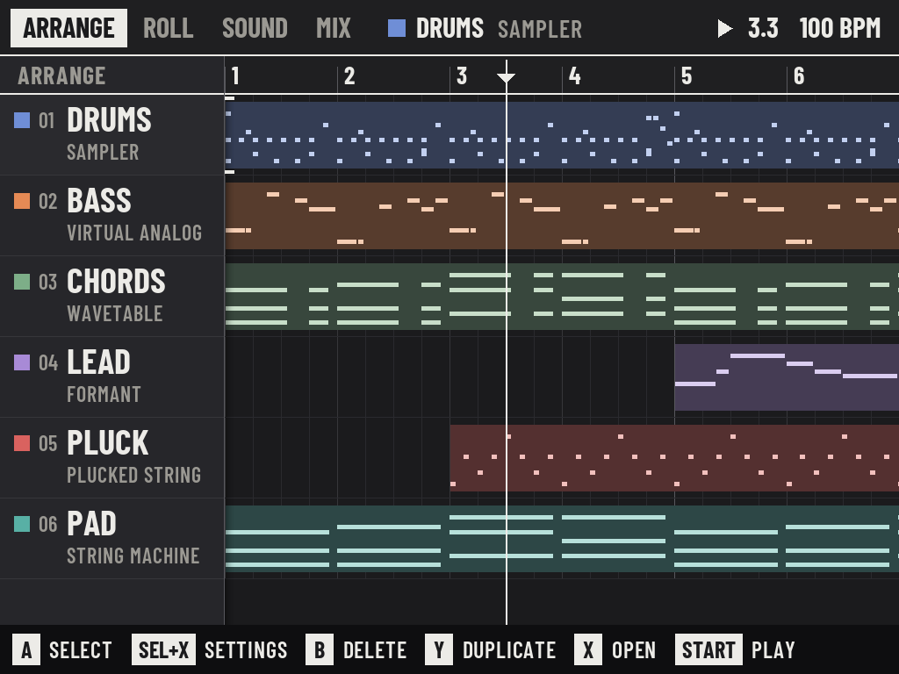
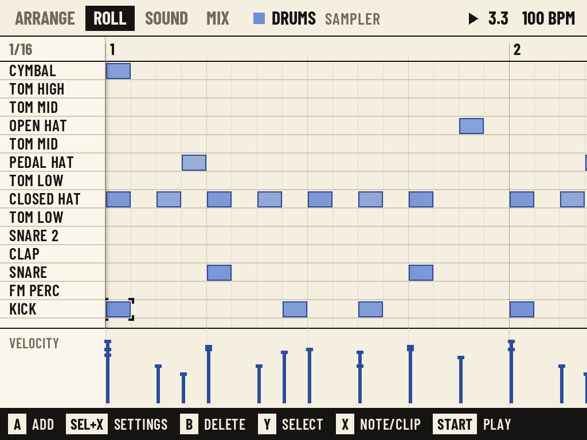
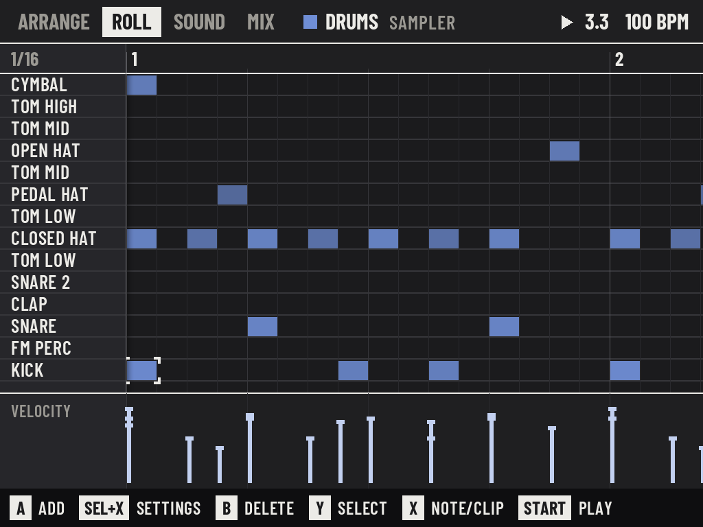
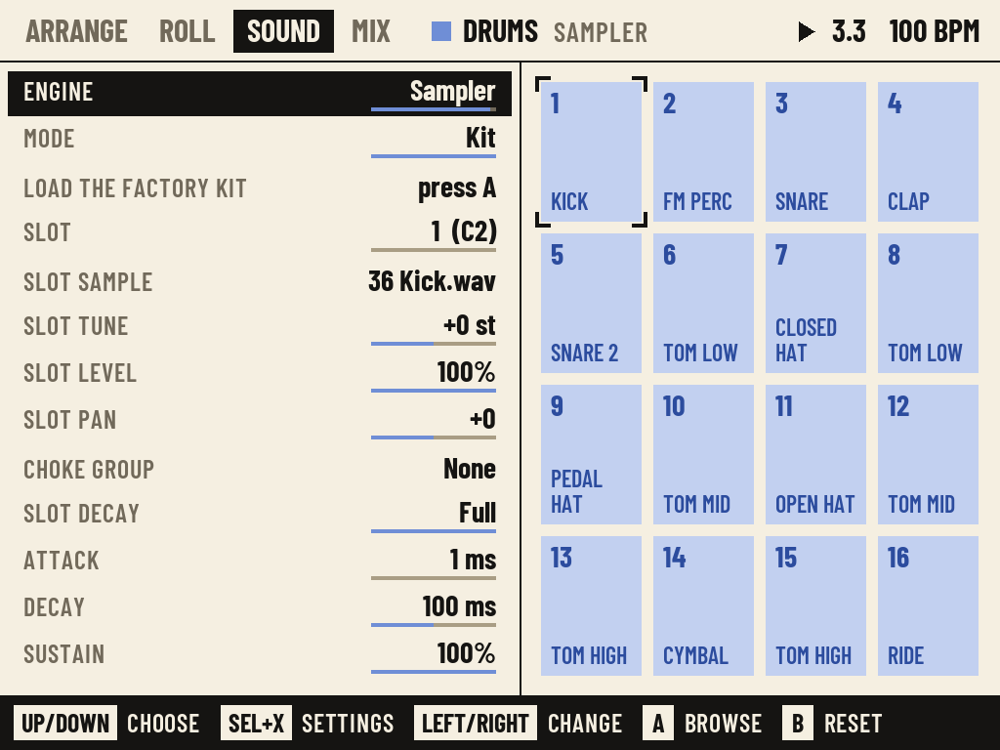
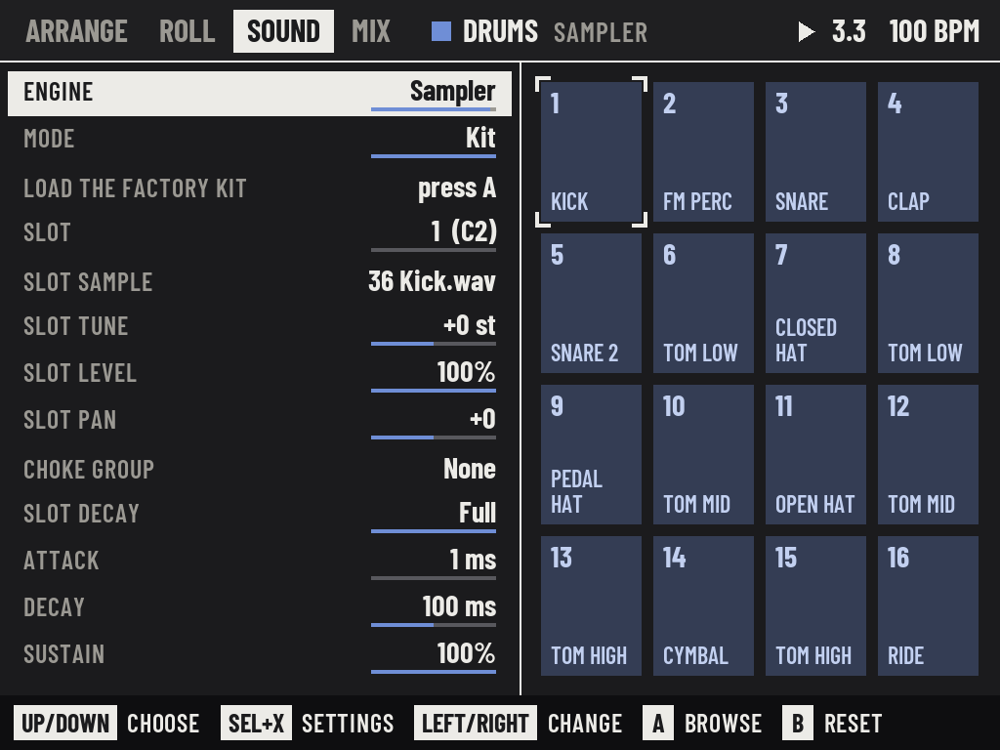
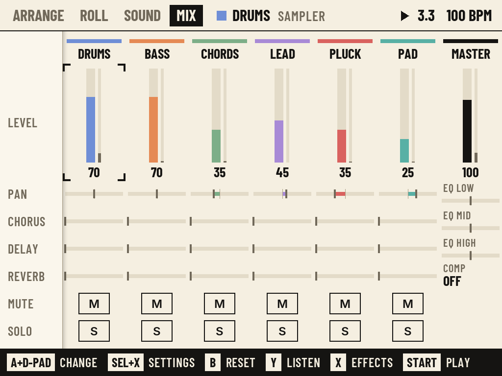
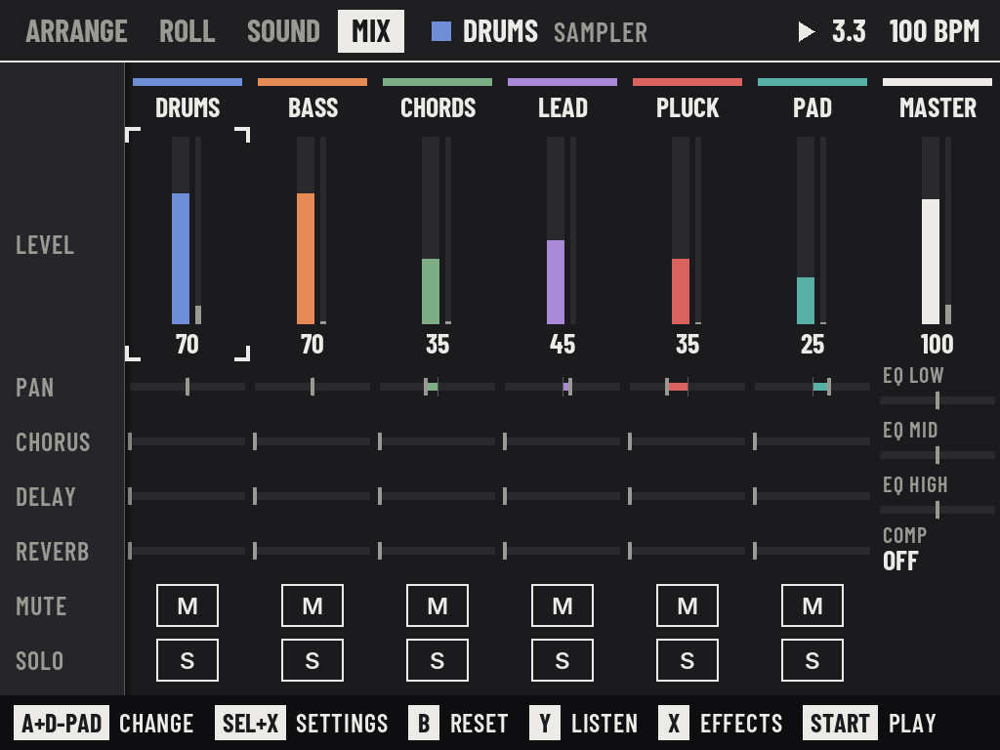

FREE · OPEN SOURCE · VERSION @VERSION@
A piano-roll groovebox for handhelds.
Twenty-four synth engines, a sampler, chorus, delay and reverb, written note by note with a d-pad. For PortMaster handhelds, and right here in your browser.
PortMaster package, about 2 MB · 64-bit handhelds, 640×480 and up · Source on GitHub · Also on itch.io
The demo song, playing in the arrangement.
01 ARRANGE
Clips on a timeline.
- Eight tracks, each with its own instrument and colour.
- Clips are shared. Edit one copy and every placement of it follows.
- Build the song with A and B: add, stretch, move and duplicate clips, and loop a region while you work on it.
- Zoom and page with the shoulder buttons, and play from anywhere.


02 ROLL
Every note, by hand.
- A piano roll made for a d-pad. Add a note with A, stretch it, move it, select an area with Y.
- Notes carry expression: velocity, length, probability and glide.
- Parameter locks. Any note can carry its own value for any sound parameter.
- Automation lanes under the notes, for the sound, the effects and the master.
- Drum tracks get a named row per sound.


03 SOUND
Twenty-four engines and a sampler.
- Synth engines from virtual analog, FM and wavetable to formant, speech, plucked string, string machine, chiptune and drums.
- A sampler that plays a sound pitched, looped or sliced, or as a kit of sixteen pads. A drum kit comes built in; bring your own WAV files too.
- Shape it: a filter and drive after every sound, and envelopes and LFOs that can move any parameter.
- MIDI on handhelds and desktops: play and record from a keyboard, send tracks to outboard synths, and send clock.
- Virtual analog
- Analog + filter
- Waveshaper
- Two-op FM
- 6-op FM ×3
- Phase distortion
- Formant
- Additive
- Wavetable
- Wave terrain
- Chords
- String machine
- Chiptune
- Speech
- Swarm
- Filtered noise
- Particles
- Plucked string
- Modal resonator
- Bass drum
- Snare drum
- Hi-hat


04 MIX
A strip per track.
- Level, pan, mute and solo, with a meter on every strip.
- Three sends: chorus, a tempo-synced ping-pong delay, and a big reverb.
- Master EQ and a limiter, so a loud song stays clean.
- Render the song to a WAV file when it's done, or each track as its own stem for mixing elsewhere.


05 CONTROLS
One set of moves, every screen.
A adds and selects, B deletes, Y copies, X opens; hold a button and use the d-pad to change what it holds. The hint bar at the bottom of the screen always shows what's possible.
06 TRY IT
Play it in your browser.
The same app, compiled for the web. Nothing to install: use the keyboard, or plug in a game controller. Your songs are kept in this browser.
Works in current Chrome, Edge, Firefox and Safari on a computer. Sound starts when you click.
07 GET IT
On a handheld.
Twill Studio installs through PortMaster, which runs on most Linux handheld systems.
- 01Download twill.zip, the PortMaster package.
- 02Copy it into PortMaster's autoinstall folder on the handheld's card.
- 03Open PortMaster. It installs the zip when it starts.
- 04Start Twill Studio from Ports. Menu + Start quits.
- NEEDS
- A 64-bit (AArch64) handheld with a screen of 640×480 or more
- TESTED ON
- TrimUI Brick Pro and Anbernic RG28XX (KNULLI), Retroid Pocket 5 (ROCKNIX)
- SAVES
- Autosave next to the app; projects in
projects/, WAV renders inrenders/ - SAMPLES
- WAV files in
samples/, next to the app - DESKTOP
- Builds on macOS and Linux from the source
08 STATUS
Where it is.
WORKS TODAY
- Arrangement, piano roll, sound and mixer
- 24 synth engines, the sampler and kits
- Modulators, automation and parameter locks
- Chorus, delay, reverb, master EQ and limiter
- Projects, autosave and WAV renders
- MIDI in and out on handhelds and desktops
- The browser version
NEXT
- A listing in PortMaster's catalogue (in testing now)
- In the browser: songs, samples and renders in and out
- More handhelds, as people try it
NOT PROMISED
- Dates
- MIDI in the browser
- Touch screens
09 QUESTIONS
Asked, answered.
Is it free?
Yes, and open source under the GNU GPL, version 3. The built-in drum kit's samples are public domain (CC0). Music you make with Twill Studio is yours.
What does it run on?
64-bit Linux handhelds through PortMaster, with a screen of 640×480 or larger; current web browsers on a computer; and macOS or Linux if you build it yourself.
Do I need a controller in the browser?
No. The keyboard works: arrows move, X is A, Z is B, S is X, A is Y, Q and W are L1 and R1, 1 and 2 are L2 and R2, Enter is Start, Tab is Select and Esc is Menu. A game controller works too.
Where are my songs?
On a handheld, next to the app: the last song autosaves, and saved projects go to
projects/. In the browser, they're kept in that browser's storage for this
site, so clearing the site's data clears them. A way to take them in and out of the
browser is next on the list.
Can I use my own samples?
Yes. Put WAV files in the samples/ folder next to the app and choose them
from the sound view.
Does it do MIDI?
On handhelds and desktops: a MIDI keyboard plays and records the current track, a track can play an outboard synth instead of its own sound, and the clock can go out. Not in the browser yet.
Where do I report a bug or ask for something?
On GitHub.